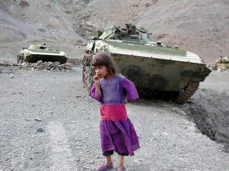
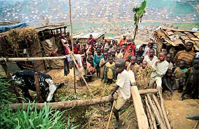

Daniel Dufour, 17 Septembre 2001, 9h45l

Compagnons,Pourquoi être cynique en de pareilles heures ? Ce n'est pas du cynisme. Mon sentiment d'horreur et ma sympathie pour les new-yorkais ne vacillent pas.
Mais comme, de ce temps-ci, j'ai du temps pour lire sur le Net, je lis. Et les conclusions se font de plus en plus pressantes, et elles sont pires que jamais.
La communauté des "estis" de par le monde va se partager en trois blocs:
- BLOC 1: Les puissants riches qui s'appuient sur des motifs justes pour faire des chienneries, genre l'occident.
- BLOC 2: Les puissants pauvres qui s'appuient sur des motifs justes pour faire des chienneries, genre l'orient.
- BLOC 3: Les opprimés d'un peu partout dans le monde.
Auparavant, le BLOC 3 était divisé en deux sous-blocs:
- BLOC 3A: Les opprimés d'un peu partout dans le monde dont le "principal crime" est d'exister, genre les tibétains ou les kosovars.
- BLOC 3B: Les opprimés d'un peu partout dans le monde dont le seul crime est d'exister et qui s'appuient sur des motifs justes pour faire des chienneries, genre Castro ou Arafat.
Auparavant, quand un membre du BLOC 1 ou du BLOC 2 tappait sur un membre du BLOC 3A, la communauté internationale réagissait vivement. Dans le cas du BLOC 3B, c'était plus partagé, ça dépendait. Remarquez que c'était sal, puant et mal propre. Je n'essaie pas de dire le contraire car là n'est pas la finalité de mon propos.
Dorénavant, que va-t-il se passer si tout les membres des BLOCS 1 et 2 se concertent pour tapper ensemble dans leBLOC 3B ? Normalement, ça devrait ne rien changer, sauf si le BLOC 2 marchande son aide au BLOC 1 contre une "unification" conceptuelle du BLOC 3.
Vous me suivez ? Je crains que les étiquettes "A" et"B" soient en train dedisparaitre, par simplification des genres. "Si tu n'es ni "1" ni "2", alors tu es "3". Et si tu es "3", tu seras automatiquement la cible de "1" ou "2", sans appel auprès de "1" lorsque victime de "2", "1" étant lié"moralement" par ses concessions à "1".

En clair, ceci: pauvre Tchetchenie, pauvre Tibet, pauvre Palestine, pauvre Sri Lanka, pauvres musulmans de Chine, pauvres musulmans de partout, pauvres de nous.Mes amis, ma réaction de la semaine dernière était:"ouf, il n'y aura pas de guerre, tout le monde se concerte".
Aujourd'hui, je me rend compte que c'est pire: toutes les grandes machines à oppression du monde vont s'unir pour se donner un standard mondial d'oppression.
Mon Dieu, mon Dieu. Au secours. Que les Chrétiens, que les Juifs, que les Musulmans, que tous se réveillent, s'interpellent et s'unissent. Leur dieu vient de leur lancer le plus pressant appel qu'ils n'aient jamais entendu.
Que les athées se réveillent aussi. Qu'ils nomment leur morale, qu'ils la définissent et, si elle est bonne et juste, qu'il la mettent en oeuvre.
Daniel